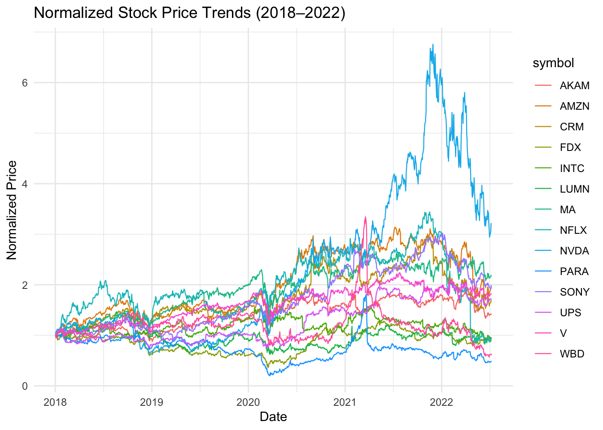
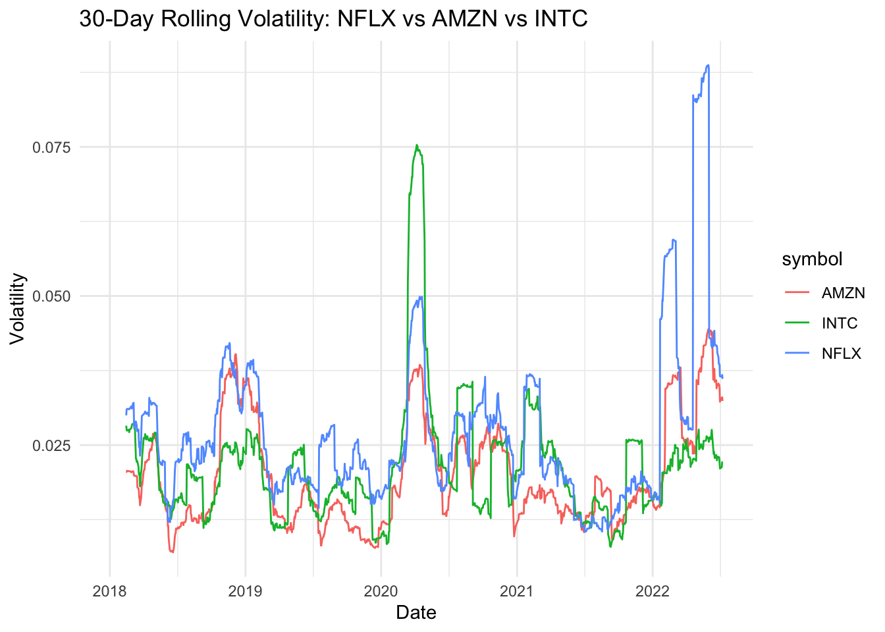
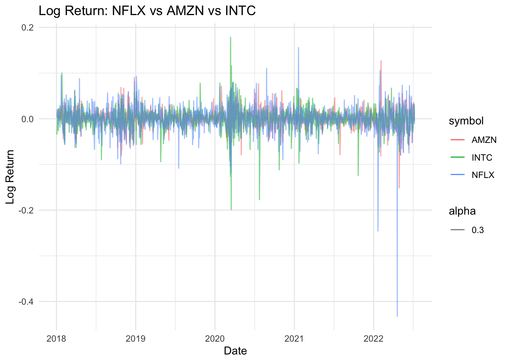
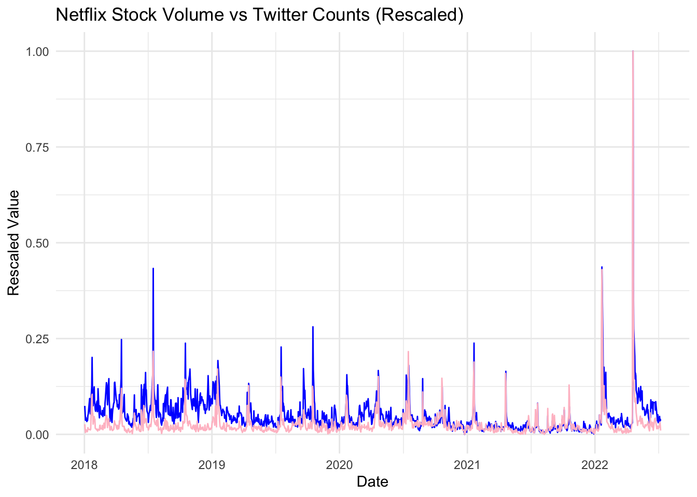
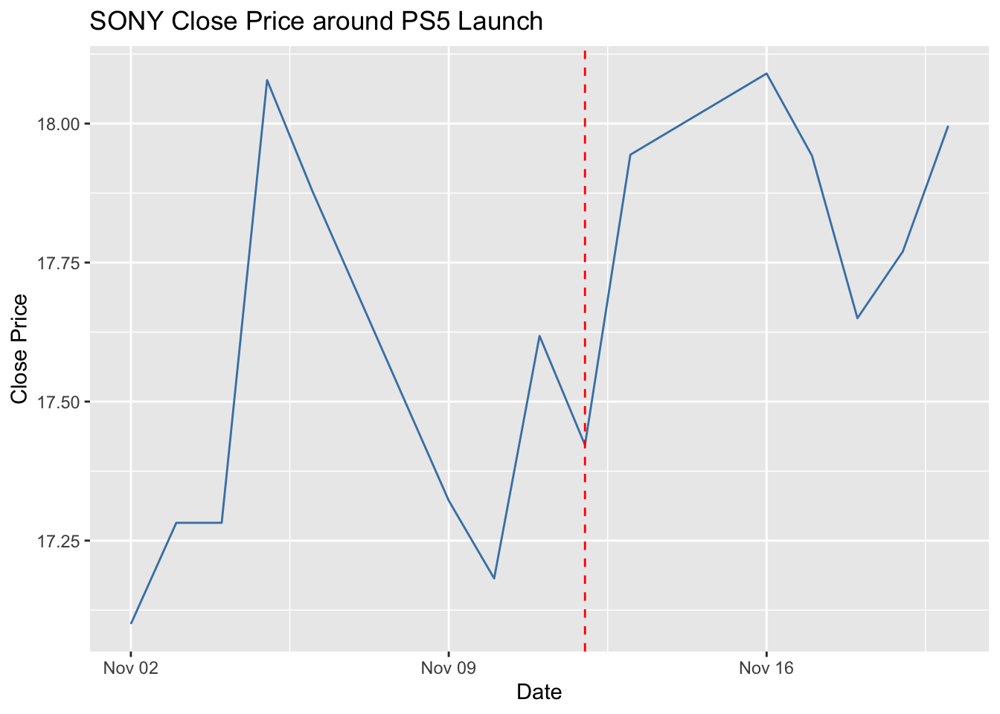
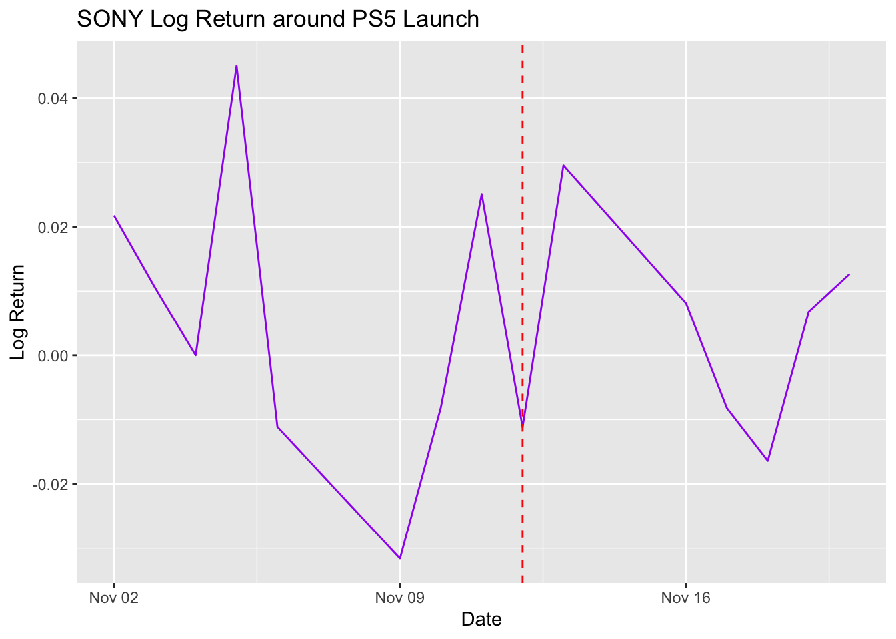
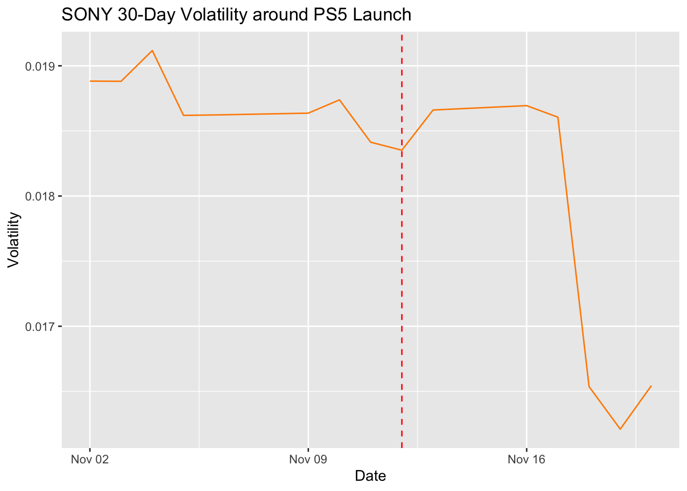
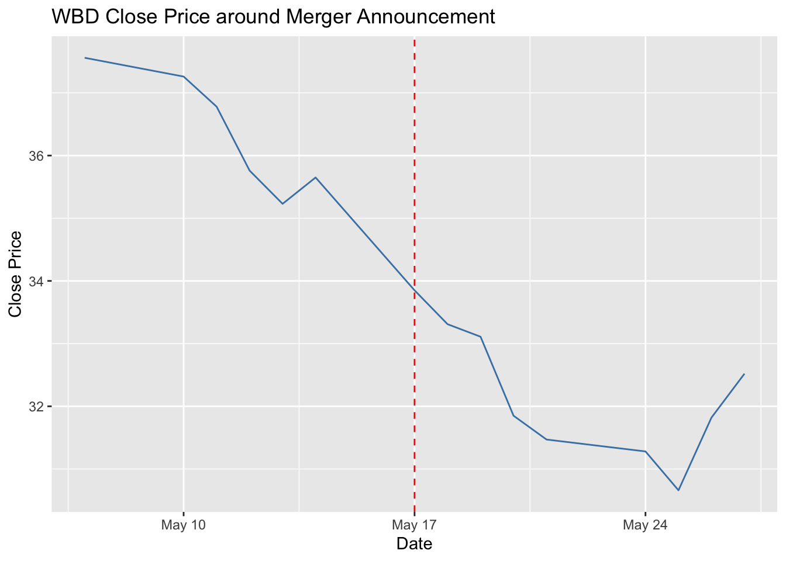
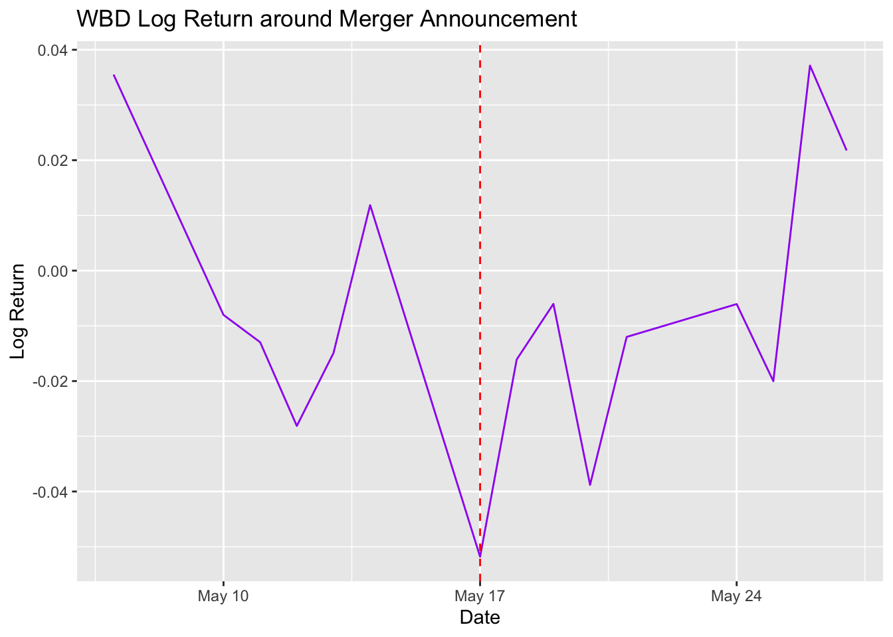
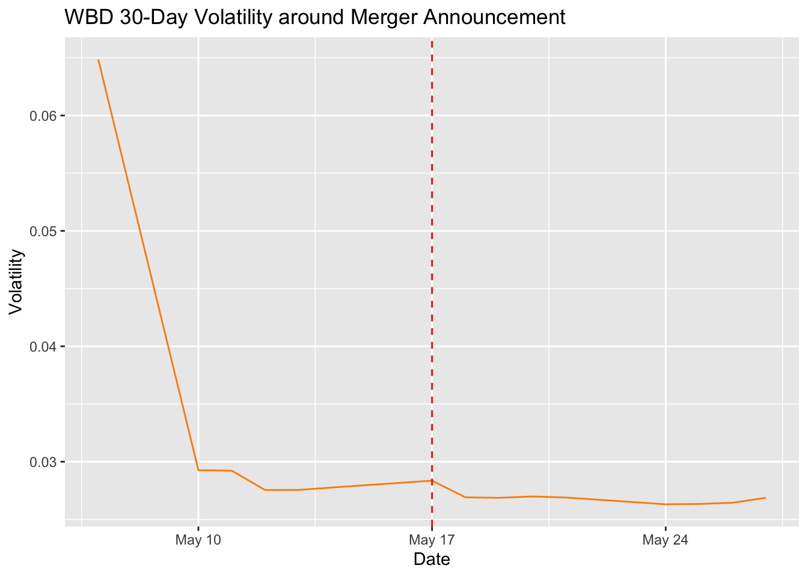

9 Extra Work: Stock Market Fluctuation
Description:
This section showcases additional work Phoebe Pan completed for fun, exploring Netflix and its affiliated companies through financial and sentiment data from 2018 to 2022. The analysis combines stock price trends, rolling volatility, and Twitter sentiment to investigate how major events influenced market dynamics.
Data sources:
Data Imports
WBD_stock<-read_csv("/Users/piipan/Documents/GitHub/comp112/portfolio-PiiPan/data/ds solo project/affiliated companies/WBD_daily_data.csv")
V_stock<-read_csv("/Users/piipan/Documents/GitHub/comp112/portfolio-PiiPan/data/ds solo project/affiliated companies/V_daily_data.csv")
UPS_stock<-read_csv("/Users/piipan/Documents/GitHub/comp112/portfolio-PiiPan/data/ds solo project/affiliated companies/UPS_daily_data.csv")
SONY_stock<-read_csv("/Users/piipan/Documents/GitHub/comp112/portfolio-PiiPan/data/ds solo project/affiliated companies/SONY_daily_data.csv")
PARA_stock<-read_csv("/Users/piipan/Documents/GitHub/comp112/portfolio-PiiPan/data/ds solo project/affiliated companies/PARA_daily_data.csv")
NVDA_stock<-read_csv("/Users/piipan/Documents/GitHub/comp112/portfolio-PiiPan/data/ds solo project/affiliated companies/NVDA_daily_data.csv")
NFLX_stock<-read_csv("/Users/piipan/Documents/GitHub/comp112/portfolio-PiiPan/data/ds solo project/affiliated companies/NFLX_daily_data.csv")
MA_stock<-read_csv("/Users/piipan/Documents/GitHub/comp112/portfolio-PiiPan/data/ds solo project/affiliated companies/MA_daily_data.csv")
LUMN_stock<-read_csv("/Users/piipan/Documents/GitHub/comp112/portfolio-PiiPan/data/ds solo project/affiliated companies/LUMN_daily_data.csv")
INTC_stock<-read_csv("/Users/piipan/Documents/GitHub/comp112/portfolio-PiiPan/data/ds solo project/affiliated companies/INTC_daily_data.csv")
FDX_stock<-read_csv("/Users/piipan/Documents/GitHub/comp112/portfolio-PiiPan/data/ds solo project/affiliated companies/FDX_daily_data.csv")
CRM_stock<-read_csv("/Users/piipan/Documents/GitHub/comp112/portfolio-PiiPan/data/ds solo project/affiliated companies/CRM_daily_data.csv")
AMZN_stock<-read_csv("/Users/piipan/Documents/GitHub/comp112/portfolio-PiiPan/data/ds solo project/affiliated companies/AMZN_daily_data.csv")
AKAM_stock<-read_csv("/Users/piipan/Documents/GitHub/comp112/portfolio-PiiPan/data/ds solo project/affiliated companies/AKAM_daily_data.csv")
data_twitter_sentiment<-read_csv("/Users/piipan/Documents/GitHub/comp112/portfolio-PiiPan/data/ds solo project/twitter sentiments/data_2018-2022.csv")
event_df <- tibble::tibble(
date = as.Date(c(
"2020-11-12", # Sony PS5 launch
"2021-05-17" # WarnerMedia–Discovery merger news
)),
event = c(
"Sony PS5 global launch (gaming boom)",
"WarnerMedia–Discovery merger announced"
),
affected_companies = c(
"SONY", # New Gaming Station launch
"WBD" # Corporate structure change
)
)Data Cleaning
filter_stock_data <- function(data) {
data %>%
mutate(Date = as.Date(Date)) %>%
filter(Date >= as.Date("2018-01-02") & Date <= as.Date("2022-07-08"))
}
WBD_stock <- filter_stock_data(WBD_stock)
V_stock <- filter_stock_data(V_stock)
UPS_stock <- filter_stock_data(UPS_stock)
SONY_stock <- filter_stock_data(SONY_stock)
PARA_stock <- filter_stock_data(PARA_stock)
NVDA_stock <- filter_stock_data(NVDA_stock)
NFLX_stock <- filter_stock_data(NFLX_stock)
MA_stock <- filter_stock_data(MA_stock)
LUMN_stock <- filter_stock_data(LUMN_stock)
INTC_stock <- filter_stock_data(INTC_stock)
FDX_stock <- filter_stock_data(FDX_stock)
CRM_stock <- filter_stock_data(CRM_stock)
AMZN_stock <- filter_stock_data(AMZN_stock)
AKAM_stock <- filter_stock_data(AKAM_stock)
# data cleaning: combine the stock data
normalize_and_label <- function(df, ticker) {
df %>%
mutate(
Date = as.Date(Date),
normalized = `Adj Close` / first(`Adj Close`),
symbol = ticker
)
}
all_stocks <- bind_rows(
normalize_and_label(WBD_stock, "WBD"),
normalize_and_label(V_stock, "V"),
normalize_and_label(UPS_stock, "UPS"),
normalize_and_label(SONY_stock, "SONY"),
normalize_and_label(PARA_stock, "PARA"),
normalize_and_label(NVDA_stock, "NVDA"),
normalize_and_label(NFLX_stock, "NFLX"),
normalize_and_label(MA_stock, "MA"),
normalize_and_label(LUMN_stock, "LUMN"),
normalize_and_label(INTC_stock, "INTC"),
normalize_and_label(FDX_stock, "FDX"),
normalize_and_label(CRM_stock, "CRM"),
normalize_and_label(AMZN_stock, "AMZN"),
normalize_and_label(AKAM_stock, "AKAM")
)Company Info Table
company_info <- tibble::tribble(
~Company_Name, ~Ticker, ~Sector,
"Warner Bros. Discovery", "WBD", "Media & Entertainment",
"Visa Inc.", "V", "Financial Services",
"United Parcel Service", "UPS", "Logistics",
"Sony Group Corporation", "SONY", "Consumer Electronics & Entertainment",
"Paramount Global", "PARA", "Media & Entertainment",
"NVIDIA Corporation", "NVDA", "Semiconductors",
"Netflix Inc.", "NFLX", "Streaming Media",
"Mastercard Inc.", "MA", "Financial Services",
"Lumen Technologies", "LUMN", "Telecommunications",
"Intel Corporation", "INTC", "Semiconductors",
"FedEx Corporation", "FDX", "Logistics",
"Salesforce Inc.", "CRM", "Enterprise Software",
"Amazon.com Inc.", "AMZN", "E-Commerce & Cloud",
"Akamai Technologies", "AKAM", "Cloud & Cybersecurity"
)
company_info %>%
kable(format = "html", caption = "Company Overview: Netflix & Affiliated Companies") %>%
kable_styling(bootstrap_options = c("striped", "hover", "condensed"),
full_width = FALSE, position = "center")| Company_Name | Ticker | Sector |
|---|---|---|
| Warner Bros. Discovery | WBD | Media & Entertainment |
| Visa Inc. | V | Financial Services |
| United Parcel Service | UPS | Logistics |
| Sony Group Corporation | SONY | Consumer Electronics & Entertainment |
| Paramount Global | PARA | Media & Entertainment |
| NVIDIA Corporation | NVDA | Semiconductors |
| Netflix Inc. | NFLX | Streaming Media |
| Mastercard Inc. | MA | Financial Services |
| Lumen Technologies | LUMN | Telecommunications |
| Intel Corporation | INTC | Semiconductors |
| FedEx Corporation | FDX | Logistics |
| Salesforce Inc. | CRM | Enterprise Software |
| Amazon.com Inc. | AMZN | E-Commerce & Cloud |
| Akamai Technologies | AKAM | Cloud & Cybersecurity |
Normalized Stock Price Trends

Plot: 30-Day Rolling Volatility

Plot: Log Returns

Netflix Volume vs Twitter Sentiment
ggplot(data_twitter_sentiment, aes(x = date)) +
geom_line(aes(y = rescale(Volume, to = c(0, 1))), color = "blue") +
geom_line(aes(y = rescale(twt_count, to = c(0, 1))), color = "pink") +
labs(
title = "Netflix Stock Volume vs Twitter Counts (Rescaled)",
y = "Rescaled Value",
x = "Date"
) +
theme_minimal()
SONY PS5 Event Impact
sony_event <- event_df[1, ]
sony_data <- SONY_stock %>%
mutate(Date = as.Date(Date)) %>%
arrange(Date) %>%
mutate(
log_return = log(`Adj Close` / lag(`Adj Close`)),
vol_30d = rollapply(log_return, 30, sd, fill = NA)
) %>%
filter(Date >= sony_event$date - 10 & Date <= sony_event$date + 10)
ggplot(sony_data, aes(x = Date, y = Close)) +
geom_line(color = "steelblue") +
geom_vline(xintercept = as.numeric(sony_event$date), linetype = "dashed", color = "red") +
labs(title = "SONY Close Price around PS5 Launch", y = "Close Price")
SONY PS5 Event Impact

SONY PS5 Event Impact

WBD Merger Event Impact
wbd_event <- event_df[2, ]
wbd_data <- WBD_stock %>%
mutate(Date = as.Date(Date)) %>%
arrange(Date) %>%
mutate(
log_return = log(`Adj Close` / lag(`Adj Close`)),
vol_30d = rollapply(log_return, 30, sd, fill = NA, align = "right")
) %>%
filter(Date >= wbd_event$date - 10 & Date <= wbd_event$date + 10)
ggplot(wbd_data, aes(x = Date, y = Close)) +
geom_line(color = "steelblue") +
geom_vline(xintercept = as.numeric(wbd_event$date), linetype = "dashed", color = "red") +
labs(title = "WBD Close Price around Merger Announcement", y = "Close Price")
WBD Merger Event Impact

WBD Merger Event Impact
